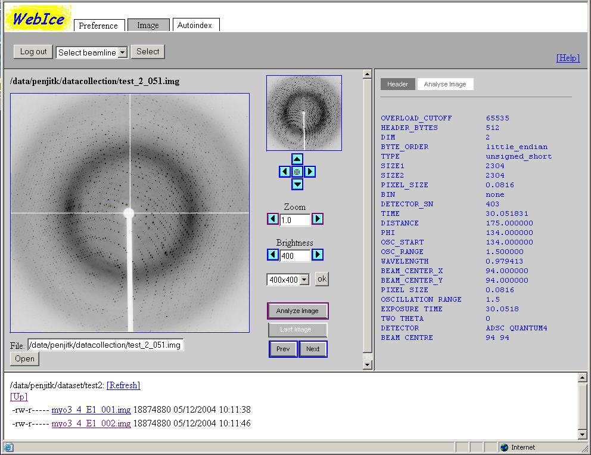

The Image Viewer allows users to view a diffraction image located on the file server at SSRL. The image files are subject to the Unix security restriction. The user must have a read permission to the image file in order to load and view the image.
The user may use this viewer without having a beam time.
The viewer comprises of three main frames: left, right and bottom. The left frames consists of a JPEG image and a control panel for adjusting the image display, such as zooming and paning. The left frames either displays an image header or an image analysis result. The bottom frames is a file browser that allows the user to select an image file and explore directories.

Image files must be located on the smbfs file server to be viewable by the Image Viewer. There are three ways to select an image to be displayed. One is to type in an image path in the text box in the left frame. The file path typically begins with /home or /data and followed by the user's login name, for example, /home/joeuser/images/remo_1_001.img.
The second way to select an image is to user the file browser in the bottom frame.
The third way is to click on "Prev" or "Next" button in the image control panel, which is located on the right side of the display image. These buttons only work if an image has already been loaded. The "Prev" button loads an image whose index in the file name is immediately lower than the current image. For example, if the current image is remo_3_015.img, clicking the "Prev" button will load remo_3_014.img or clicking on the "Next" button will load remo_3_015.img. If the current image is the first image in the dataset, clicking the "Prev" button yields no effect. Same go with the "Next" button if the current image is the last in the dataset.
The file path of the image is displayed above the JPEG image.
The user must have a read permission to the image file to view the image.
The file browser displays a list of sub directories and image files (file extension .img) of a given directory on smbfs. The directory is set to /data/userid by default. The user can save the current directory for use in a future session by clicking the Save button in the Preference tab.
The first line in the file browser displays the current directory. The second line is an HTML link [Up] that allows thw user to change directory up one level to the parent of the current directory. The following lines are sub directories or image files. Each line contains file permissions, file/directory name, size in bytes, and last modification date and time. To go down to a sub directory, click the HTML link for desired sub directory. To select an image for display, click the HTML link for the desired image file.
Note that the user can only browse files and directories that have a read permission for his Unix login id.
The user can zoom, pan, adjust brightness and set display size of the image by using the image control panel located on the right side of the displayed image. The control panel consists of (from top to bottom) a thumbnail image, pan buttons, zoom buttons, brightness buttons, image size drop down menu, Analyze Image button, and Prev/Next button.
There are three ways to pan the image. One is by clicking on the image. The image will be moved so that the mouse click position will be come the center of the display.
The second way to pan the image is by using the thumbnail located at the top of the image control panel. When the zoom level is greater than 1 (the image is zoomed in), the thumbnail displays a red regtangle representing the area of the image being displayed. The more the image is zoomed in, the smaller the rectangle. The user can click anywhere in the thumnail to move the rectangle.
The third way to pan the image is by clicking one of the pan buttons, which are located below the thumbnail and above the zoom buttons.
The user can zoom the image in and out by using the zoom buttons or by entering a zoom level in the zoom text box. When the image is zoomed out to the maximum, the zoom is level is 1.0; it can not go lower than this. The higher the zoom level the more zoomed in the image. The left arrow button is for zooming out and the right is for zooming in.
Brightness of the image is controlled by the Brightness buttons and text box below the zoom buttons. The left arrow button makes the image darker and the right button makes it lighter. The brightness range is usually between 100 - 2000. The lower the number the darker the image. Brightness of 200-400 is typically good for most images.
By default the image size is 400 by 400 pixels. The user can change the
image display size by selecting a different size from the drop down
menu
located under the brightness buttons.
The button "Last Image" loads the last collected image at the
selected beamline. The button is disabled if this webice session
is not connected to a beamline. See Connecting to a Beamline section to
learn how to connect to a beamline in order to get live data.
Prev and Next button load previous image and next image in the
dataset, respectively. A dataset is a series of images in a
directory, whose file names share the same prefix. For example,
infl_1_001.img and infl_1_020.img are in the same dataset, whereas
infl_2_001.img is not. If the currently displayed image is
infl_1_005.img, "Prev" button will load infl_1_004.img and "Next"
button will load infl_1_006.img.
Image information is displayed in the frame on the right side. It has a grey background. There are two types of information that can be viewed: image header and image analysis result. At the top of the frame, there are two tabs, "Image Header" and "Analyze Image", that the user can click in order to select the type of information to be displayed. The selected tab will have a white background and the unselected tab will have a grey background.
When an image is loaded, the "Image Header" tab is automatically selected and the image header information is displayed. The "Analyze Image" tab is automatically selected and the image analysise result is displayed when the user clicks the "Analyze Image" button in the image control panel.
Image header information is retrieved via the image server. These are headers stored in the actual image file. The following describes what they are:
| Header Name | Description | Example |
|---|---|---|
| OVERLOAD_CUTOFF | The highest intensity value for each pixel | 65535 |
| HEADER_BYTES | ??? | 512 |
| DIM | ??? | 2 |
| BYTE_ORDER | Machine byte order (little or big endian) | little_endian |
| TYPE | Type of value stored for each pixel | unsigned_short |
| SIZE1 | Width of the image in pixel | 2304 |
| SIZE2 | Height of the image in pixel | 2304 |
| PIXEL_SIZE | Size of the pixel in cm | 0.0816 |
| BIN | ??? | none |
| DETECTOR_SN | ??? | 403 |
| TIME | Exposure time | 30.041451 |
| DISTANCE | Detector distance to sample | 175.000000 |
| PHI | Phi | 89.000000 |
| OSC_START | Phi | 89.000000 |
| OSC_RANGE | Oscillation range | 1.500000 |
| WAVELENGTH | Wavelength in Anstrom | 0.979413 |
| BEAM_CENTER_X | Beam center X in cm | 94.000000 |
| BEAM_CENTER_Y | Beam center Y in cm | 94.000000 |
| PIXEL SIZE | Size of the pixel in cm | 0.0816 |
| OSCILLATION RANGE | Oscillation range | 1.5 |
| EXPOSURE TIME | Exposure time in seconds??? | 30.0415 |
| TWO THETA | ??? | 0 |
| DETECTOR | Name of detector | ADSC QUANTUM4 |
| BEAM CENTRE | Beam center X and Y | 94 94 |
Below the image resize drop down menu in the control panel, the user will find a button that can be toggled between "Analyze Image" and "Display Image" button text. When an image is loaded, the button text shows the "Analyze Image" text.
When the user clicks on "Analyze Image", WebIce will run a program called spotfinder to analyze the image. spotfinder generates an image with highlighted features and a log files containing the analysis result. When the program finishes, WebIce will display the image generated by spotfinder. The button text will change to "Display Image". In the image info frame on the right side, the "Analyze Image" tab will be automatically selected to display the content of the log file under.
The user can still manually select the "Header" tab to see the image header information.
When the user clicks on "Display Image" button, WebIce will display the original image. The "Header" tab in the right frame will be selected automatically to display the image header. Once the image has been analyzed, the user can click on the "Analyze Image" tab next to the "Header" tab to see the analysis result at any time.
Once the image has been analyzed, it will not be analyzed again when the user clicks the "Analyze Image" button. WebIce will simply load the result image and log file stored in /data/userid/webice/image directory (unless the time stamp of the original image is newer than these files).
The log file and image file generate by spotfinder are saved in /data/userid/webice/image directory, where userid is the user login name. For example, if joeuser, currently viewing /data/joeuser/dataset1/inf_1_001.img image, clicks the "Analyze Image" button, output files inf_1_001.log and inf_1_001.spt.img will be saved in /data/joeuser/webice/image directory. The content of the log file is displayed in the image info frame with a grey background, located on the right side.
This is the result generated by spotfinder saved in the log file (see picture below).
In the output IMG image, the following features are indicated:
The program shows a brief summary of each image it has processed. Statistics shown include:
The most useful criteria to determine the quality of an image are: